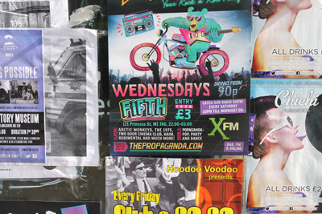

Nightlife
Nighlife in Manchester
If you are an existing student you will be no stranger to Manchester nightlife; however if you are a first year student, we have fresher events organised for you to attend so that you are felt welcome in your new home. Manchester is one of the most popular nightlife spots in the UK and has earned its reputation for its popular venues and cheap drinks. With the amount of variety available for students in Manchester, it is perfect for those wanting a big night out or those wanting a quiet drink.
Nightclubs
If you are looking for a good night out then Manchester has some of the best clubs available to you as students. There are many options for student-focused events in Manchester and there is something different on offer every day of the week.
Sound Control is located on Oxford Road and has a variety of event-based nights including music such as dub step, drum n bass and house. Sound Control is famous for its “Bass Face” Wednesdays, which is the perfect night out for you and a group of friends. Tickets for Sound Control nights are available from a variety of sources including student employees.
Another one of Manchester’s iconic nights out is Sankey’s, which is on offer for a few selected months of the year. Sankey’s produces a variety of genres including house and techno and is well known for its Thursday events.
Located just off curry mile is Antwerp Mansion. Antwerp Mansion uses 100% of its profits in its mission to renovate the building, which gives you an honest cause for a good night out. Honestly, Antwerp is rough in exterior… in fact it is rough in interior also but if you need an honest reason for a messy night out then Antwerp is the place to be.Of course, there are many more club offerings in Manchester such as Deaf Institute, Bijou and the various clubs on Deans gate Locks. Therefore, there is really only one way to find your favourite… Try them all!
Pubs
If the clubbing scene is not your thing and you prefer a quiet drink in a pub atmosphere then fear not as Manchester has a host of great pubs too!
If you are an existing Manchester student then you definitely know about Fallow field and may even live there. If this is the case then you also know about 256, which is located in central Fallow field, which is a highly populated student area. Therefore 256 has a great atmosphere. Definitely worth a visit.
Another great pub that is worth a visit is Pub Zoo located opposite the MMU business school. Pub Zoo has a warm, welcoming atmosphere that makes it almost difficult to leave along with reduced priced drinks on select nights for students.
Location is key for pubs in Manchester and another offering situated close to the Geoffrey Manton building is Footage. The tempting location of this pub makes it perfect for a drink after a busy day at university. Along with a bustling atmosphere, Footage has a host of interesting nights including “Stock Market” where drink prices are reduced or increased based on demand. Perfect for those of you who are looking for a cheap night out!
Live Music
If live music is your thing then say no more. Manchester plays host to a large variety of live music, which makes it perfect for students wanting an authentic experience. Manchester is well known for its live music and it produces various young talent repeatedly along with being toured by big names.
If you want to see, your favourite BIG artists live then chances are they are playing at the MEN. The MEN is the first stop for big names and therefore will be your first stop in wanting to see them. Located next to a variety of transport options in the centre of town it is perfect for those one in a lifetime nights out.
However, if you are into experiencing local talent then some lesser known venues will be up your street. Venues such as Deaf Instituteplays host to a variety of performers along with other venues such as Sound Control and the Ruby Lounge.In fact, whatever your taste in music is Manchester is sure to have it available live somewhere.